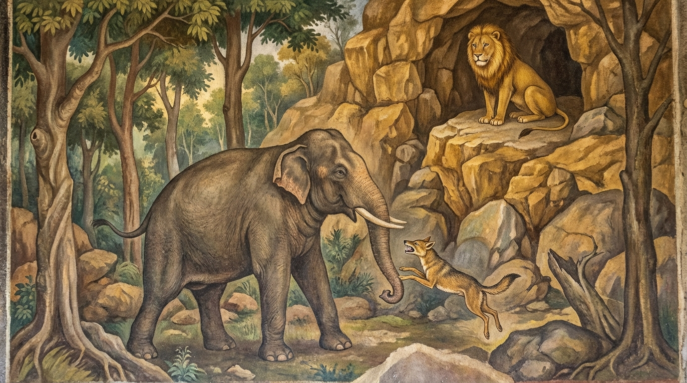

3. විරෝචන ජාතකය (143)
“ලසී ච තෙ නිප්ඵලිතා” (නුඹේ මොළය ද ඉවතට පැන්නේය) යන මේ ජාතක කතාව ශාස්තෲන් වහන්සේ වේළුවනාරාමයෙහි වැඩවසන කල්හි, ගයා ශීර්ෂයේදී දේවදත්ත තෙරුන් විසින් බුදුරදුන්ගේ විලාසය දැක්වීම අරබයා දේශනා කරන ලදී. දේවදත්ත තෙම ධ්යානයෙන් පිරිහී, ලාභ සත්කාරයෙන් ද පිරිහී ‘එක් උපායක් ඇතැ’යි සිතා, කරුණු පහක් ඉල්ලා එය නොලැබූ තැන, අගසව්වන්ගේ සද්ධිවිහාරික වූ, අලුත පැවිදි වූ, ධර්ම විනය නොදත් භික්ෂූන් පන්සියයක් ගෙන ගයා ශීර්ෂයට ගොස් සංඝයා භේද කොට, එකම සීමාවක් තුළ වෙනම පොහොය කර්ම කළේය. ශාස්තෲන් වහන්සේ ඒ භික්ෂූන්ගේ ඤාණ පරිපාක කාලය (නුවණ මුහුකුරා ගිය බව) දැන අගසව් දෙනම එහි පිටත් කර යැවූහ. දේවදත්ත තෙම ඔවුන් දැක සතුටු සිත් ඇත්තේ, රාත්රියෙහි දහම් දෙසමින් ‘මම බුද්ධ ලීලාව දක්වන්නෙමි’යි බුදුරදුන්ගේ ඉරියව් පාමින් සැරියුත් තෙරුන් අමතා, “ඇවැත්නි සාරිපුත්තය, භික්ෂු සංඝයා පහව ගිය නිදිමත ඇත්තේය. මාගේ පිට රිදෙයි. මම එය මදක් දිග හරින්නෙමි. භික්ෂූන්ට දහම් කතාව ඔබට වැටහේවා”යි පවසා නින්දට ගියේය. අගසව් දෙනම ඒ භික්ෂූන්ට දහම් දෙසා, මගඵල ලබා දී අවබෝධ කරවා, ඒ සියල්ලන්ම රැගෙන වේළුවනයටම ආපසු වැඩම කළහ.
මේ අතර කෝකාලික භික්ෂුව හිස් වූ විහාරය දැක දේවදත්තයන් වෙත ගොස්, “ඇවැත්නි දේවදත්ත, ඔබ පිරිස භේද කළේය. අගසව්වෝ දෙදෙනා විහාරය හිස් කොට පිරිස රැගෙන ගියහ. ඔබ තවම නිදන්නෙහිදැ”යි පවසා, ඔහුගේ සිවුර ඉවත් කොට බිත්තියට තබා උලක් ගසන්නාක් මෙන් විලුඹින් ළයට පහරක් ගැසුවේය. එකෙණෙහිම ඔහුගේ මුවින් ලේ පිටවිය. ඔහු එතැන් පටන් රෝගාතුර විය. ශාස්තෲන් වහන්සේ (ආපසු වැඩම කළ) සැරියුත් තෙරුන්ගෙන්, “සාරිපුත්ත, ඔබ එහි ගිය කල්හි දේවදත්ත කුමක් කළේ දැ”යි විමසූහ. “ස්වාමීනි, දේවදත්ත තෙම අප දැක ‘බුද්ධ ලීලාව දක්වන්නෙමි’යි බුදුරදුන් මෙන් හැසිරෙන්නට ගොස් මහත් විනාශයකට පත් විය”යි පැවසීය. ශාස්තෲන් වහන්සේ, “සාරිපුත්ත, දේවදත්ත තෙම මා අනුකරණය කරන්නට ගොස් විනාශයට පත් වූයේ දැන් පමණක් නොවේ. පෙර ද (එසේම) විනාශයට පත් වූයේ යැ”යි වදාරා, තෙරුන් විසින් අයදින ලදුව අතීත කතාව ගෙනහැර දැක්වූහ.
අතීතයේ බරණැස් නුවර බ්රහ්මදත්ත රජු රාජ්ය කරන කල්හි බෝසතාණන් වහන්සේ කේශර සිංහයෙකු වී හිමාලය ප්රදේශයේ රන් ගුහාවක වාසය කළහ. එක් දිනක් ඒ සිංහ රජු ගුහාවෙන් නික්ම, ඇඟමැලි කඩා, සිව් දෙස බලා, සිංහ නාද කොට ගොදුරු සොයා යන්නේ, මහත් මී හරකෙකු මරා රසවත් මස් අනුභව කොට, එක් විලකට බැස මැණික් පැහැති ජලයෙන් කුස පුරවාගෙන ගුහාව දෙසට යමින් සිටියේය. එකල එක් හිවලෙක් ගොදුරු සොයා යන්නේ හදිසියේම සිංහයා දැක, පලා යන්නට නොහැකිව සිංහයා ඉදිරියෙහි පාමුල වැටී වැතිරී සිටියේය. “හිවල, කුමක්දැ”යි ඇසූ කල්හි, “ස්වාමීනි, මම ඔබට උපස්ථාන කිරීමට කැමැත්තෙමි”යි කීවේය. සිංහයා “යහපත, එව. මට උපස්ථාන කරව. මම තට රසවත් මස් කන්නට දෙන්නෙමි”යි පවසා හිවලා ද රැගෙන රන් ගුහාවට ගියේය. එතැන් පටන් හිවලා සිංහයා ඉතිරි කරන මස් කයි. ඔහු ටික දිනකින්ම තරබාරු ශරීර ඇත්තෙක් විය.
ඉක්බිති එක් දිනක් ගුහාවේ වැතිරී සිටි සිංහයා මෙසේ කීය: “හිවල යව, කඳු මුදුනේ සිට, කඳු පාමුල හැසිරෙන ඇත්, අස්, මී ආදීන් අතුරින් යමෙකුගේ මස් කනු රිසි ද, ඌ දෙස බලා අවුත් ‘අසවල් සතාගේ මස් කනු කැමැත්තෙමි’යි පවසා, මා වැඳ ‘විරොච සාමි’ (ස්වාමීනි, බබළනු මැනවි/වික්රම පානු මැනවි) යි කියව. මම ඌ මරා මධුර වූ මස් කා තට ද දෙන්නෙමි.” හිවලා කඳු මුදුනට නැග නොයෙක් මෘගයන් දෙස බලා යමෙකුගේ මස් කනු කැමති වී ද, රන් ගුහාවට පිවිස සිංහයාට ඒ බව දන්වා පාමුල වැටී “විරොච සාමි” යයි කියයි. සිංහයා වේගයෙන් පැන, මද කිපුණ උතුම් ඇතෙකු වුව ද එතැනම මරා දමා, තමා ද රසවත් මස් කා හිවලාට ද දෙයි. හිවලා කුස පුරා මස් කා ගුහාවට වැදී නිදයි. කල් යත්ම ඔහුගේ මානය වැඩුණේය. “මම ද සිව්පාවෙකි. කුමක් හෙයින් දිනපතා අනුන් විසින් පෝෂණය කරනු ලබමින් වෙසෙම් ද? මෙතැන් පටන් මම ද ඇතුන් ආදීන් මරා මස් කන්නෙමි. මෘගරාජ සිංහයා ද මද කිපුණ ඇතුන් මරන්නේ ‘විරොච සාමි’ (බබළනු මැනවි ස්වාමීනි) යයි කියන ලද වචනය නිසාය. මම ද සිංහයා ලවා ‘විරොච ජම්බුක’ (බබළනු මැනවි හිවල) යයි මට කියවාගෙන, එක් මද ඇතුකු මරා මස් කන්නෙමි”යි සිතුවේය.
ඔහු සිංහයා වෙත ගොස් මෙසේ කීවේය. “ස්වාමීනි, මම බොහෝ කලක් ඔබ විසින් මරන ලද ඇතුන්ගේ මස් කෑවෙමි. මම ද එක් උතුම් ඇතෙකු මරා මස් කනු කැමැත්තෙමි. එබැවින් ඔබ නිදන රන් ගුහාවේ මම නිදන්නෙමි. ඔබ පර්වත පාමුල හැසිරෙන ඇතකු බලා මා වෙත අවුත් ‘විරොච ජම්බුක’ (හිවල, බබළනු මැනවි) යයි කියන්න. මේ පමණ දෙයකට මසුරු නොවන්න.” එවිට සිංහයා ඔහුට මෙසේ කීය. “හිවල, තෝ ඇතුන් මැරීමට සමත් සිංහ කුලයක උපන්නෙක් නොවෙයි. ඇතකු මරා මස් කෑමට සමත් හිවලෙක් ලොව නැත. තට මෙය රුචි නොවේවා. මා විසින් මරන ලද ඇතුන්ගේම මස් කා ජීවත් වව.” ඔහු මෙසේ කියනු ලැබූවත් එයින් වැළකීමට නොකැමතිව නැවත නැවතත් ඉල්ලා සිටියේය. සිංහයා ඔහු වැළැක්වීමට නොහැකි තැන එය පිළිගෙන, “එසේ නම් මා වසන තැනට වී වැතිර ගනු” යයි හිවලා රන් ගුහාවේ සැතපවූවේය. තමා පර්වත පාමුල මද කිපුණ ඇතකු බලා ගුහා දොරටුවට ගොස් “විරොච ජම්බුක” (හිවල, බබළනු මැනවි) යයි කීවේය. හිවලා රන් ගුහාවෙන් නික්ම, ඇඟමැලි කඩා සිව්දෙස බලා, තුන් වරක් (හිවල්) හඬ නඟා “මද ඇතාගේ කුම්භස්ථලයට පනිමි”යි පැන, ඉලක්කය වැරදී ඇතාගේ පාමුල වැටුණේය. ඇතා දකුණු පය ඔසවා උගේ හිස මැඩසලීය. හිසෙහි ඇට කුඩුපට්ටම් වී ගියේය. ඉක්බිති ඇතා පයින් ගසා උගේ සිරුර ගොඩක් කොට, ඒ මතට බෙටි හෙළා, කුඤ්චනාද කොට වනයට පිවිසියේය.

බෝසතාණන් වහන්සේ මේ පුවත දැක, “හිවල, දැන් බබළනු මැනවි” යයි පවසා මේ ගාථාව වදාළහ.
“තාගේ මොළය ද ඉවතට පැන්නේය. හිස ද පලන ලද්දේය. නුඹේ සියලු ඉළ ඇට බිඳී ගියේය. අද නුඹ (හොඳටම) බබළන්නෙහිය.”
එහි ලසී යනු හිස් මුල්ය (මොළයයි). නිප්ඵලිතා යනු පිටතට නික්මුණේය යන්නයි. බෝසතාණන් වහන්සේ මෙසේ මේ ගාථාව පවසා, දිවි ඇති තාක් සිට කම් වූ පරිදි මියපරලොව ගියහ.
ශාස්තෲන් වහන්සේ මේ ධර්ම දේශනාව ගෙනහැර දක්වා ජාතකය පූර්වාපර සන්ධි ගළපා නිම කළ සේක. “එකල හිවලා වූයේ දේවදත්තය. සිංහයා වූයේ මම ම ය.”
තුන්වන වූ විරෝච ජාතක වර්ණනාවයි.